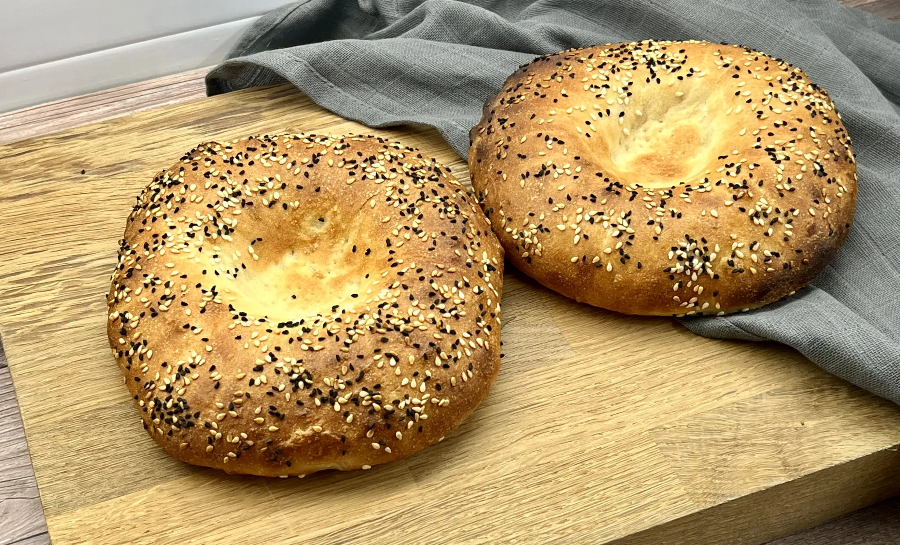

Obi non or lepyoshka is a type of flat tandoor bread popular in Afghan, Tajik and Uzbek cuisine. It is shaped like a disc and is relatively thicker than naan. There are different types of Naan, and they originate from Central and South Asia with Middle Eastern influences.
Meal prep time : 8 hours 45 minutes
Servings : 4